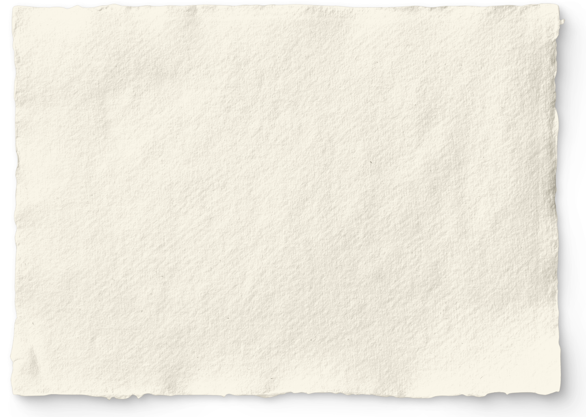

A MIDI engine that thinks in
channels, not tracks.
Composure is an always-listening sonic sketchbook. Its Scribe silently captures everything you play — no record button, no ceremony — and holds it as addressable sessions you can mine later.
Everything routes through one virtual MIDI device with sixteen channels, labeled not by number but by role — Drums, Bass, Chords, Melody. Address one voice and the others hold. Transpose the bass; the rest stay themselves. The song stays itself.
Built around the way an agent actually hears a song — not the way a human arranges one.
$ composure --compose “late-night tape loop”
composure v1.8.0 — 16 channels ready. 4 roles assigned.
you: transpose the bass down a fifth.
composure: channel 2 (Bass) shifted −7 semitones. channels 1, 3–4 untouched.
$ |
The Engine
A track is a container for events — a row in a spreadsheet of time. A channel is a voice: a persistent identity you can address, modify, or replace without disturbing the others. The difference between editing a document and having a conversation.
One virtual MIDI device named Composure, sixteen channels labeled by role — Drums, Bass, Chords, Melody by default, the rest yours to name, lock, and reassign. Ask it to compose and it returns parallel streams routed to the right player, never one blob dumped on channel one.
Fourteen moods — Joy, Dark, Mystic, Deep, Calm, Sad, Tense, Sweet, Cinematic, Ethereal, Warm, Cosmic, Meditative, Dreamlike — plus any you invent. Not a preset, not a genre tag: a first-class emotional frame the engine composes against. create_mood(“rainy arcade”) works.
Sixteen tools over MCP — JSON-RPC 2.0 on localhost — plus an embedded copilot with the same reach inside the app. Playback, sessions, channel map, soundscapes, forges, moods. Built so an agent can drive the whole instrument the way a producer drives a band: by talking to the parts.
The engine keeps playback memory — it remembers what last played. Say “save that” and it banks the take without a single event being passed. Say “make it darker” and modify_playback transposes the bass, scales the tempo, swaps a voice — transforms, never regenerates. No re-render, no collateral drift. The other channels hold. The song stays itself while one voice shifts.
Shows all sixteen channels and the role each one holds right now
Starts the voices — the whole band, live, routed to the right channels
Mutates one voice — transpose, scale, replace — while the rest hold
Reframes the emotional register the whole band plays in, from any keyword
Hum it, play it, record it. Spotify’s Basic Pitch runs voice-to-MIDI fully on-device — no cloud, no cable. A melody caught in a hallway becomes an editable voice in the channel map, with key detection and real sheet music to prove it.
The Android build is the sketchbook in your bag — and a remote MIDI surface for the desktop rig, with haptic feedback under every pad and key. Devices on the same network find each other and sync sessions, audio, and patches. Capture where the idea happens; finish where the speakers are.
Every take is a session — chords, key, tempo, tags, notes, and the events themselves. The Vault keeps them searchable; the Knowledge Graph links them by shared tags and words; the Scribe can export any of them to Obsidian as markdown with embedded MIDI. A sketchbook with a memory.
The Scribe
The Scribe is why Composure exists. A silent daemon that captures every note you play — no record button, no session setup, no ceremony — and files it as something you can find, edit, and mine later.
session captured — 02:14 · 312 notes
key: D minor · 96 bpm
source: MX88 · ch 1–3
“I wasn’t recording.”
No. But the Scribe was.
The Scribe can start silently when the machine boots. Auto-discard drops anything under five notes or ten seconds, so the archive holds ideas — not accidents.
Any session exports to Obsidian as a markdown note with the MIDI embedded — your sketchbook lives beside your notes, searchable like everything else you think.
Capture without ceremony, then mine the archive. Every captured session is addressable — by the Dungeon Master as quest material, by the Knowledge Graph as a node, by you as the raw ore of the next piece.
Inside
“You don’t tell Composure what to play. You tell it what each player should be doing, and it figures out how they fit together.”
The distinction matters more than it sounds. A track is a container for events. A channel is a voice — a persistent identity that runs through the entire piece and can be addressed, modified, or replaced without disturbing the others.
That is the difference between editing a document and having a conversation. Composure is built for the second one.
A radio station that doesn’t exist until you tune it. Radio runs Lyria Realtime — a live music model that plays in real time and takes direction while it’s playing. Type where you want to go and the station steers mid-broadcast: key, texture, weather, momentum.
No playlist, no buffer, no two listens alike. It’s the farthest room in the building — the one where the idea arrives already playing.
you: take it somewhere colder.
radio: steering… key → D dorian · texture thins · tape wow up.
The Rooms
Every view in the sidebar is a room in the same building — forges that build sound, sketches that capture it, quests that make you practice it. These are rendered from the real app.
Every voice is synthesized — membrane, noise, metal, FM, pluck — with per-voice pitch, decay, tone, snap, filter, and sends. Describe a kit and the AI builds it; export the pattern as MIDI.
Play a cohesive 16-bar melody in 7/8 time. The Scribe is listening — perform it live and the AI judges your take against the criteria.
Quests are written by the AI, timed, and judged on what you actually play. Gauntlet mode chains them room to room.
Pick a mood — or invent one. The engine composes an evolving eight-voice texture around it: root, scale, tempo, density, and voices that mutate as it breathes.
Fourteen built-in moods, plus create_mood(“anything”).
The session feed — every capture with type badges, mini visualizers, and MIDI export.
The Scribe’s console. MIDI from hardware, audio from the synth bus or mic, live note visualizer.
Generation from text or voice — MIDI ideas, drum kits, or synth patches, saved to the timeline.
AI patch design over the native C++ engine, with a Chladni-plate cymatics visualizer and a preset library.
Physical-model drum synthesis and a step sequencer. Describe a kit; the AI builds it.
Generative ambient textures steered by mood, root, scale, and density.
Drawing is composing. Every ink stroke on the 8-second loop becomes a melody line.
Real-time generative radio you steer with a prompt while it plays.
Piano roll plus real sheet-music rendering, AI arrangement, and internal instruments.
A force-directed map of everything you’ve made, linked by shared tags and words.
Gamified practice — AI-written quests, judged on what you actually play.
Every session, recording, kit, and patch — searchable, downloadable, permanent.
The Scribe, channel labels, device sync, haptics, models, and the Substrate link.
The Sketchbook
Composure refuses to choose between capture and performance. The same engine runs as a desktop instrument and an Android sketchbook — and the tablet can drive the desktop rig.
Voice-to-MIDI on device. A melody caught in a hallway becomes an editable voice in the channel map — no cable, no interface, no ceremony.
A physical-model drum forge, an AI synth forge with a Chladni-plate visualizer, a knowledge graph of every session you’ve ever kept. The vault remembers what you forgot you wrote.
The MCP surface means Substrate — or any agent — can compose, mutate, and perform alongside you. Inside the app, an embedded copilot has the same reach, and it listens to your voice. The instrument was designed to be played by more than hands.
The question is what it is instead. Composure is our answer in progress — read the full dispatch from the house.